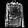
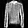

WGAN-GP overriding Model.train_step
Author: A_K_Nain
Date created: 2020/05/9
Last modified: 2026/05/12
Description: Implementation of Wasserstein GAN with Gradient Penalty.

Wasserstein GAN (WGAN) with Gradient Penalty (GP)
The original Wasserstein GAN leverages the Wasserstein distance to produce a value function that has better theoretical properties than the value function used in the original GAN paper. WGAN requires that the discriminator (aka the critic) lie within the space of 1-Lipschitz functions. The authors proposed the idea of weight clipping to achieve this constraint. Though weight clipping works, it can be a problematic way to enforce 1-Lipschitz constraint and can cause undesirable behavior, e.g. a very deep WGAN discriminator (critic) often fails to converge.
The WGAN-GP method proposes an alternative to weight clipping to ensure smooth training. Instead of clipping the weights, the authors proposed a "gradient penalty" by adding a loss term that keeps the L2 norm of the discriminator gradients close to 1.
Setup
import os
os.environ["KERAS_BACKEND"] = "tensorflow"
import keras
import tensorflow as tf
from keras import layers
Prepare the Fashion-MNIST data
To demonstrate how to train WGAN-GP, we will be using the Fashion-MNIST dataset. Each sample in this dataset is a 28x28 grayscale image associated with a label from 10 classes (e.g. trouser, pullover, sneaker, etc.)
IMG_SHAPE = (28, 28, 1)
BATCH_SIZE = 512
# Size of the noise vector
noise_dim = 128
fashion_mnist = keras.datasets.fashion_mnist
(train_images, train_labels), (test_images, test_labels) = fashion_mnist.load_data()
print(f"Number of examples: {len(train_images)}")
print(f"Shape of the images in the dataset: {train_images.shape[1:]}")
# Reshape each sample to (28, 28, 1) and normalize the pixel values in the [-1, 1] range
train_images = train_images.reshape(train_images.shape[0], *IMG_SHAPE).astype("float32")
train_images = (train_images - 127.5) / 127.5
Number of examples: 60000
Shape of the images in the dataset: (28, 28)
Create the discriminator (the critic in the original WGAN)
The samples in the dataset have a (28, 28, 1) shape. Because we will be
using strided convolutions, this can result in a shape with odd dimensions.
For example,
(28, 28) -> Conv_s2 -> (14, 14) -> Conv_s2 -> (7, 7) -> Conv_s2 ->(3, 3).
While performing upsampling in the generator part of the network, we won't get
the same input shape as the original images if we aren't careful. To avoid this,
we will do something much simpler:
- In the discriminator: "zero pad" the input to change the shape to (32, 32, 1)
for each sample; and
- Ihe generator: crop the final output to match the shape with input shape.
def conv_block(
x,
filters,
activation,
kernel_size=(3, 3),
strides=(1, 1),
padding="same",
use_bias=True,
use_bn=False,
use_dropout=False,
drop_value=0.5,
):
x = layers.Conv2D(
filters, kernel_size, strides=strides, padding=padding, use_bias=use_bias
)(x)
if use_bn:
x = layers.BatchNormalization()(x)
x = activation(x)
if use_dropout:
x = layers.Dropout(drop_value)(x)
return x
def get_discriminator_model():
img_input = layers.Input(shape=IMG_SHAPE)
# Zero pad the input to make the input images size to (32, 32, 1).
x = layers.ZeroPadding2D((2, 2))(img_input)
x = conv_block(
x,
64,
kernel_size=(5, 5),
strides=(2, 2),
use_bn=False,
use_bias=True,
activation=layers.LeakyReLU(0.2),
use_dropout=False,
drop_value=0.3,
)
x = conv_block(
x,
128,
kernel_size=(5, 5),
strides=(2, 2),
use_bn=False,
activation=layers.LeakyReLU(0.2),
use_bias=True,
use_dropout=True,
drop_value=0.3,
)
x = conv_block(
x,
256,
kernel_size=(5, 5),
strides=(2, 2),
use_bn=False,
activation=layers.LeakyReLU(0.2),
use_bias=True,
use_dropout=True,
drop_value=0.3,
)
x = conv_block(
x,
512,
kernel_size=(5, 5),
strides=(2, 2),
use_bn=False,
activation=layers.LeakyReLU(0.2),
use_bias=True,
use_dropout=False,
drop_value=0.3,
)
x = layers.Flatten()(x)
x = layers.Dropout(0.2)(x)
x = layers.Dense(1)(x)
d_model = keras.models.Model(img_input, x, name="discriminator")
return d_model
d_model = get_discriminator_model()
d_model.summary()
Model: "discriminator"
┏━━━━━━━━━━━━━━━━━━━━━━━━━━━━━━━━━┳━━━━━━━━━━━━━━━━━━━━━━━━┳━━━━━━━━━━━━━━━┓ ┃ Layer (type) ┃ Output Shape ┃ Param # ┃ ┡━━━━━━━━━━━━━━━━━━━━━━━━━━━━━━━━━╇━━━━━━━━━━━━━━━━━━━━━━━━╇━━━━━━━━━━━━━━━┩ │ input_layer (InputLayer) │ (None, 28, 28, 1) │ 0 │ ├─────────────────────────────────┼────────────────────────┼───────────────┤ │ zero_padding2d (ZeroPadding2D) │ (None, 32, 32, 1) │ 0 │ ├─────────────────────────────────┼────────────────────────┼───────────────┤ │ conv2d (Conv2D) │ (None, 16, 16, 64) │ 1,664 │ ├─────────────────────────────────┼────────────────────────┼───────────────┤ │ leaky_re_lu (LeakyReLU) │ (None, 16, 16, 64) │ 0 │ ├─────────────────────────────────┼────────────────────────┼───────────────┤ │ conv2d_1 (Conv2D) │ (None, 8, 8, 128) │ 204,928 │ ├─────────────────────────────────┼────────────────────────┼───────────────┤ │ leaky_re_lu_1 (LeakyReLU) │ (None, 8, 8, 128) │ 0 │ ├─────────────────────────────────┼────────────────────────┼───────────────┤ │ dropout (Dropout) │ (None, 8, 8, 128) │ 0 │ ├─────────────────────────────────┼────────────────────────┼───────────────┤ │ conv2d_2 (Conv2D) │ (None, 4, 4, 256) │ 819,456 │ ├─────────────────────────────────┼────────────────────────┼───────────────┤ │ leaky_re_lu_2 (LeakyReLU) │ (None, 4, 4, 256) │ 0 │ ├─────────────────────────────────┼────────────────────────┼───────────────┤ │ dropout_1 (Dropout) │ (None, 4, 4, 256) │ 0 │ ├─────────────────────────────────┼────────────────────────┼───────────────┤ │ conv2d_3 (Conv2D) │ (None, 2, 2, 512) │ 3,277,312 │ ├─────────────────────────────────┼────────────────────────┼───────────────┤ │ leaky_re_lu_3 (LeakyReLU) │ (None, 2, 2, 512) │ 0 │ ├─────────────────────────────────┼────────────────────────┼───────────────┤ │ flatten (Flatten) │ (None, 2048) │ 0 │ ├─────────────────────────────────┼────────────────────────┼───────────────┤ │ dropout_2 (Dropout) │ (None, 2048) │ 0 │ ├─────────────────────────────────┼────────────────────────┼───────────────┤ │ dense (Dense) │ (None, 1) │ 2,049 │ └─────────────────────────────────┴────────────────────────┴───────────────┘
Total params: 4,305,409 (16.42 MB)
Trainable params: 4,305,409 (16.42 MB)
Non-trainable params: 0 (0.00 B)
Create the generator
def upsample_block(
x,
filters,
activation,
kernel_size=(3, 3),
strides=(1, 1),
up_size=(2, 2),
padding="same",
use_bn=False,
use_bias=True,
use_dropout=False,
drop_value=0.3,
):
x = layers.UpSampling2D(up_size)(x)
x = layers.Conv2D(
filters, kernel_size, strides=strides, padding=padding, use_bias=use_bias
)(x)
if use_bn:
x = layers.BatchNormalization()(x)
if activation:
x = activation(x)
if use_dropout:
x = layers.Dropout(drop_value)(x)
return x
def get_generator_model():
noise = layers.Input(shape=(noise_dim,))
x = layers.Dense(4 * 4 * 256, use_bias=False)(noise)
x = layers.BatchNormalization()(x)
x = layers.LeakyReLU(0.2)(x)
x = layers.Reshape((4, 4, 256))(x)
x = upsample_block(
x,
128,
layers.LeakyReLU(0.2),
strides=(1, 1),
use_bias=False,
use_bn=True,
padding="same",
use_dropout=False,
)
x = upsample_block(
x,
64,
layers.LeakyReLU(0.2),
strides=(1, 1),
use_bias=False,
use_bn=True,
padding="same",
use_dropout=False,
)
x = upsample_block(
x, 1, layers.Activation("tanh"), strides=(1, 1), use_bias=False, use_bn=True
)
# At this point, we have an output which has the same shape as the input, (32, 32, 1).
# We will use a Cropping2D layer to make it (28, 28, 1).
x = layers.Cropping2D((2, 2))(x)
g_model = keras.models.Model(noise, x, name="generator")
return g_model
g_model = get_generator_model()
g_model.summary()
Model: "generator"
┏━━━━━━━━━━━━━━━━━━━━━━━━━━━━━━━━━┳━━━━━━━━━━━━━━━━━━━━━━━━┳━━━━━━━━━━━━━━━┓ ┃ Layer (type) ┃ Output Shape ┃ Param # ┃ ┡━━━━━━━━━━━━━━━━━━━━━━━━━━━━━━━━━╇━━━━━━━━━━━━━━━━━━━━━━━━╇━━━━━━━━━━━━━━━┩ │ input_layer_1 (InputLayer) │ (None, 128) │ 0 │ ├─────────────────────────────────┼────────────────────────┼───────────────┤ │ dense_1 (Dense) │ (None, 4096) │ 524,288 │ ├─────────────────────────────────┼────────────────────────┼───────────────┤ │ batch_normalization │ (None, 4096) │ 16,384 │ │ (BatchNormalization) │ │ │ ├─────────────────────────────────┼────────────────────────┼───────────────┤ │ leaky_re_lu_4 (LeakyReLU) │ (None, 4096) │ 0 │ ├─────────────────────────────────┼────────────────────────┼───────────────┤ │ reshape (Reshape) │ (None, 4, 4, 256) │ 0 │ ├─────────────────────────────────┼────────────────────────┼───────────────┤ │ up_sampling2d (UpSampling2D) │ (None, 8, 8, 256) │ 0 │ ├─────────────────────────────────┼────────────────────────┼───────────────┤ │ conv2d_4 (Conv2D) │ (None, 8, 8, 128) │ 294,912 │ ├─────────────────────────────────┼────────────────────────┼───────────────┤ │ batch_normalization_1 │ (None, 8, 8, 128) │ 512 │ │ (BatchNormalization) │ │ │ ├─────────────────────────────────┼────────────────────────┼───────────────┤ │ leaky_re_lu_5 (LeakyReLU) │ (None, 8, 8, 128) │ 0 │ ├─────────────────────────────────┼────────────────────────┼───────────────┤ │ up_sampling2d_1 (UpSampling2D) │ (None, 16, 16, 128) │ 0 │ ├─────────────────────────────────┼────────────────────────┼───────────────┤ │ conv2d_5 (Conv2D) │ (None, 16, 16, 64) │ 73,728 │ ├─────────────────────────────────┼────────────────────────┼───────────────┤ │ batch_normalization_2 │ (None, 16, 16, 64) │ 256 │ │ (BatchNormalization) │ │ │ ├─────────────────────────────────┼────────────────────────┼───────────────┤ │ leaky_re_lu_6 (LeakyReLU) │ (None, 16, 16, 64) │ 0 │ ├─────────────────────────────────┼────────────────────────┼───────────────┤ │ up_sampling2d_2 (UpSampling2D) │ (None, 32, 32, 64) │ 0 │ ├─────────────────────────────────┼────────────────────────┼───────────────┤ │ conv2d_6 (Conv2D) │ (None, 32, 32, 1) │ 576 │ ├─────────────────────────────────┼────────────────────────┼───────────────┤ │ batch_normalization_3 │ (None, 32, 32, 1) │ 4 │ │ (BatchNormalization) │ │ │ ├─────────────────────────────────┼────────────────────────┼───────────────┤ │ activation (Activation) │ (None, 32, 32, 1) │ 0 │ ├─────────────────────────────────┼────────────────────────┼───────────────┤ │ cropping2d (Cropping2D) │ (None, 28, 28, 1) │ 0 │ └─────────────────────────────────┴────────────────────────┴───────────────┘
Total params: 910,660 (3.47 MB)
Trainable params: 902,082 (3.44 MB)
Non-trainable params: 8,578 (33.51 KB)
Create the WGAN-GP model
Now that we have defined our generator and discriminator, it's time to implement
the WGAN-GP model. We will also override the train_step for training.
class WGAN(keras.Model):
def __init__(
self,
discriminator,
generator,
latent_dim,
discriminator_extra_steps=3,
gp_weight=10.0,
):
super().__init__()
self.discriminator = discriminator
self.generator = generator
self.latent_dim = latent_dim
self.d_steps = discriminator_extra_steps
self.gp_weight = gp_weight
def compile(self, d_optimizer, g_optimizer, d_loss_fn, g_loss_fn):
super().compile()
self.d_optimizer = d_optimizer
self.g_optimizer = g_optimizer
self.d_loss_fn = d_loss_fn
self.g_loss_fn = g_loss_fn
def gradient_penalty(self, batch_size, real_images, fake_images):
"""Calculates the gradient penalty.
This loss is calculated on an interpolated image
and added to the discriminator loss.
"""
# Get the interpolated image
alpha = tf.random.uniform([batch_size, 1, 1, 1], 0.0, 1.0)
diff = fake_images - real_images
interpolated = real_images + alpha * diff
with tf.GradientTape() as gp_tape:
gp_tape.watch(interpolated)
# 1. Get the discriminator output for this interpolated image.
pred = self.discriminator(interpolated, training=True)
# 2. Calculate the gradients w.r.t to this interpolated image.
grads = gp_tape.gradient(pred, [interpolated])[0]
# 3. Calculate the norm of the gradients.
norm = tf.sqrt(
tf.reduce_sum(tf.square(grads), axis=[1, 2, 3]) + keras.backend.epsilon()
)
gp = tf.reduce_mean((norm - 1.0) ** 2)
return gp
def train_step(self, real_images):
if isinstance(real_images, tuple):
real_images = real_images[0]
# Get the batch size
batch_size = tf.shape(real_images)[0]
# For each batch, we are going to perform the
# following steps as laid out in the original paper:
# 1. Train the generator and get the generator loss
# 2. Train the discriminator and get the discriminator loss
# 3. Calculate the gradient penalty
# 4. Multiply this gradient penalty with a constant weight factor
# 5. Add the gradient penalty to the discriminator loss
# 6. Return the generator and discriminator losses as a loss dictionary
# Train the discriminator first. The original paper recommends training
# the discriminator for `x` more steps (typically 5) as compared to
# one step of the generator. Here we will train it for 3 extra steps
# as compared to 5 to reduce the training time.
for i in range(self.d_steps):
# Get the latent vector
random_latent_vectors = tf.random.normal(
shape=(batch_size, self.latent_dim)
)
with tf.GradientTape() as tape:
# Generate fake images from the latent vector
fake_images = self.generator(random_latent_vectors, training=True)
# Get the logits for the fake images
fake_logits = self.discriminator(fake_images, training=True)
# Get the logits for the real images
real_logits = self.discriminator(real_images, training=True)
# Calculate the discriminator loss using the fake and real image logits
d_cost = self.d_loss_fn(real_img=real_logits, fake_img=fake_logits)
# Calculate the gradient penalty
gp = self.gradient_penalty(batch_size, real_images, fake_images)
# Add the gradient penalty to the original discriminator loss
d_loss = d_cost + gp * self.gp_weight
# Get the gradients w.r.t the discriminator loss
d_gradient = tape.gradient(d_loss, self.discriminator.trainable_variables)
# Update the weights of the discriminator using the discriminator optimizer
self.d_optimizer.apply_gradients(
zip(d_gradient, self.discriminator.trainable_variables)
)
# Train the generator
# Get the latent vector
random_latent_vectors = tf.random.normal(shape=(batch_size, self.latent_dim))
with tf.GradientTape() as tape:
# Generate fake images using the generator
generated_images = self.generator(random_latent_vectors, training=True)
# Get the discriminator logits for fake images
gen_img_logits = self.discriminator(generated_images, training=True)
# Calculate the generator loss
g_loss = self.g_loss_fn(gen_img_logits)
# Get the gradients w.r.t the generator loss
gen_gradient = tape.gradient(g_loss, self.generator.trainable_variables)
# Update the weights of the generator using the generator optimizer
self.g_optimizer.apply_gradients(
zip(gen_gradient, self.generator.trainable_variables)
)
return {"d_loss": d_loss, "g_loss": g_loss}
Create a Keras callback that periodically saves generated images
class GANMonitor(keras.callbacks.Callback):
def __init__(self, num_img=6, latent_dim=128):
self.num_img = num_img
self.latent_dim = latent_dim
def on_epoch_end(self, epoch, logs=None):
random_latent_vectors = tf.random.normal(shape=(self.num_img, self.latent_dim))
generated_images = self.model.generator(random_latent_vectors)
generated_images = (generated_images * 127.5) + 127.5
for i in range(self.num_img):
img = generated_images[i].numpy()
img = keras.utils.array_to_img(img)
img.save("generated_img_{i}_{epoch}.png".format(i=i, epoch=epoch))
Train the end-to-end model
# Instantiate the optimizer for both networks
# (learning_rate=0.0002, beta_1=0.5 are recommended)
generator_optimizer = keras.optimizers.Adam(
learning_rate=0.0002, beta_1=0.5, beta_2=0.9
)
discriminator_optimizer = keras.optimizers.Adam(
learning_rate=0.0002, beta_1=0.5, beta_2=0.9
)
# Define the loss functions for the discriminator,
# which should be (fake_loss - real_loss).
# We will add the gradient penalty later to this loss function.
def discriminator_loss(real_img, fake_img):
real_loss = tf.reduce_mean(real_img)
fake_loss = tf.reduce_mean(fake_img)
return fake_loss - real_loss
# Define the loss functions for the generator.
def generator_loss(fake_img):
return -tf.reduce_mean(fake_img)
# Set the number of epochs for training.
epochs = 20
# Instantiate the customer `GANMonitor` Keras callback.
cbk = GANMonitor(num_img=3, latent_dim=noise_dim)
# Get the wgan model
wgan = WGAN(
discriminator=d_model,
generator=g_model,
latent_dim=noise_dim,
discriminator_extra_steps=3,
)
# Compile the wgan model
wgan.compile(
d_optimizer=discriminator_optimizer,
g_optimizer=generator_optimizer,
g_loss_fn=generator_loss,
d_loss_fn=discriminator_loss,
)
# Start training
wgan.fit(train_images, batch_size=BATCH_SIZE, epochs=epochs, callbacks=[cbk])
Epoch 1/20
118/118 ━━━━━━━━━━━━━━━━━━━━ 1193s 10s/step - d_loss: -7.9513 - g_loss: -15.1636
Epoch 2/20
118/118 ━━━━━━━━━━━━━━━━━━━━ 1151s 10s/step - d_loss: -6.5045 - g_loss: -12.4259
Epoch 3/20
118/118 ━━━━━━━━━━━━━━━━━━━━ 1199s 10s/step - d_loss: -5.7718 - g_loss: -13.2736
Epoch 4/20
118/118 ━━━━━━━━━━━━━━━━━━━━ 1261s 11s/step - d_loss: -4.9928 - g_loss: -15.8792
Epoch 5/20
118/118 ━━━━━━━━━━━━━━━━━━━━ 1532s 13s/step - d_loss: -4.7681 - g_loss: -10.9200
Epoch 6/20
118/118 ━━━━━━━━━━━━━━━━━━━━ 1355s 11s/step - d_loss: -4.4067 - g_loss: -14.2685
Epoch 7/20
118/118 ━━━━━━━━━━━━━━━━━━━━ 1200s 10s/step - d_loss: -4.7728 - g_loss: -6.4940
Epoch 8/20
118/118 ━━━━━━━━━━━━━━━━━━━━ 1273s 11s/step - d_loss: -5.0244 - g_loss: -12.6093
Epoch 9/20
118/118 ━━━━━━━━━━━━━━━━━━━━ 1386s 12s/step - d_loss: -3.9809 - g_loss: -8.4483
Epoch 10/20
118/118 ━━━━━━━━━━━━━━━━━━━━ 1326s 11s/step - d_loss: -3.5291 - g_loss: -9.4523
Epoch 11/20
118/118 ━━━━━━━━━━━━━━━━━━━━ 1379s 12s/step - d_loss: -3.7796 - g_loss: -7.0504
Epoch 12/20
118/118 ━━━━━━━━━━━━━━━━━━━━ 1669s 14s/step - d_loss: -3.0553 - g_loss: -7.8258
Epoch 13/20
118/118 ━━━━━━━━━━━━━━━━━━━━ 1395s 12s/step - d_loss: -3.3355 - g_loss: -6.1509
Epoch 14/20
118/118 ━━━━━━━━━━━━━━━━━━━━ 1305s 11s/step - d_loss: -3.7391 - g_loss: -9.3586
Epoch 15/20
118/118 ━━━━━━━━━━━━━━━━━━━━ 1337s 11s/step - d_loss: -2.8381 - g_loss: -8.0551
Epoch 16/20
118/118 ━━━━━━━━━━━━━━━━━━━━ 2035s 17s/step - d_loss: -3.2722 - g_loss: -8.0528
Epoch 17/20
118/118 ━━━━━━━━━━━━━━━━━━━━ 2247s 19s/step - d_loss: -3.4859 - g_loss: -5.4908
Epoch 18/20
118/118 ━━━━━━━━━━━━━━━━━━━━ 1953s 17s/step - d_loss: -2.6428 - g_loss: -6.6256
Epoch 19/20
118/118 ━━━━━━━━━━━━━━━━━━━━ 1595s 14s/step - d_loss: -2.2567 - g_loss: -6.1179
Epoch 20/20
118/118 ━━━━━━━━━━━━━━━━━━━━ 1424s 12s/step - d_loss: -2.7902 - g_loss: -2.9462
<keras.src.callbacks.history.History at 0x15ce5bc10>
Display the last generated images:
from IPython.display import Image, display
display(Image("generated_img_0_19.png"))
display(Image("generated_img_1_19.png"))
display(Image("generated_img_2_19.png"))

